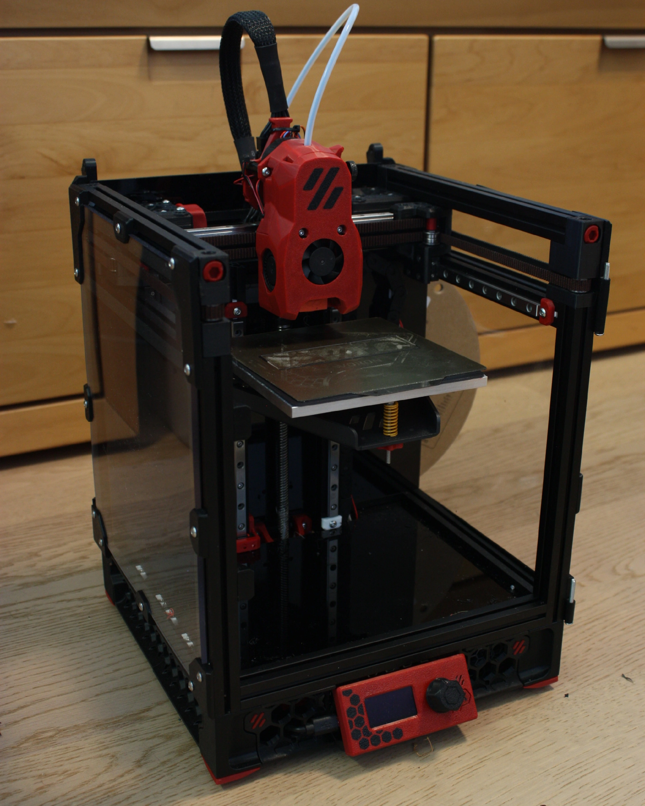

Mein 2. 3D Drucker
Schon als ich etwa zehn Jahre alt war, hatte ich meine erste Berührung mit 3D-Druckern. Sie faszinierten mich seitdem. Es brauchte jedoch noch etwas Zeit, bis ich meinen ersten baute. Mit 13 baute ich dann einen Lerdge IX, einen Open-Source-3D-Drucker, den ich über das nächste Jahr hinweg regelmässig verbessert und modifiziert habe. Nach einem Jahr kaufte ich den zweiten, einen Voron 0.2, der mich wirklich herausforderte. Mithilfe eines Raspberry Pi machte ich ihn für das gesamte Netzwerk zugänglich. Das ist meine Erfahrung mit 3D-Druckern.
